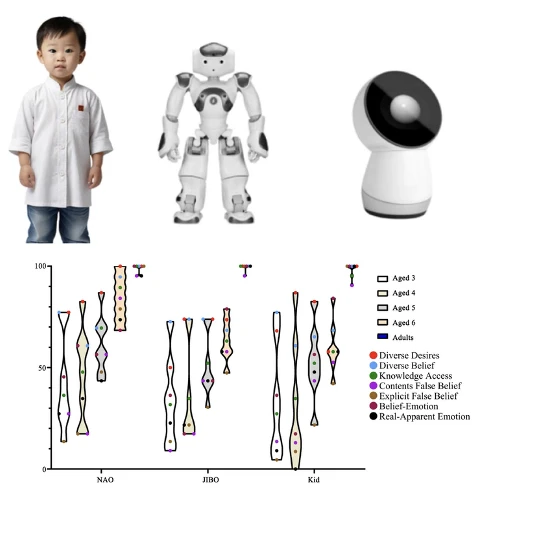
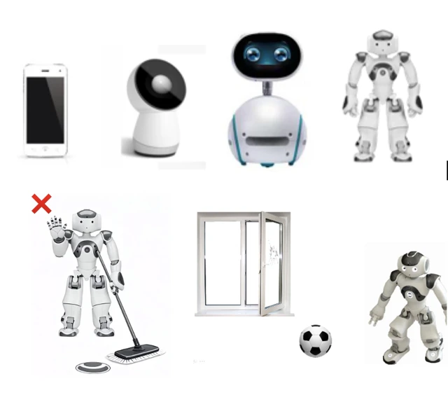
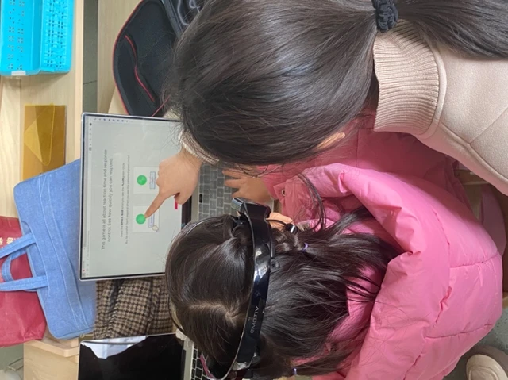
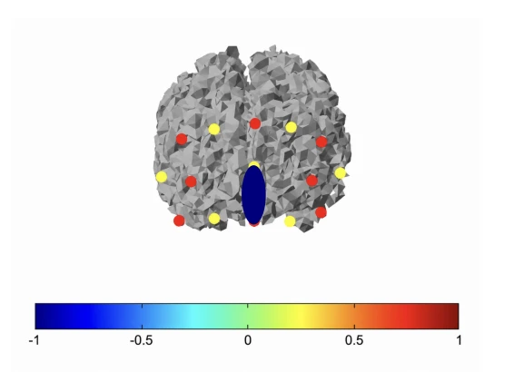

Preschool-aged Children’s Theory of Mind in Robots
Artificial Intelligence Facilitates Interactive Learning: The Development of Participant Epistemic Trust of Young Children in Digital Voice Assistants
Promoting the children’s executive function: Based on video games and emotiv EEGUnder the COVID-19 pandemic: Impact of digital media use on executive function of 3- to 6-year-olds and the moderating role of parenting

An eye-tracking and fNIRS study of epistemic trust toward electronic medias in children with and without autism spectrum disorder